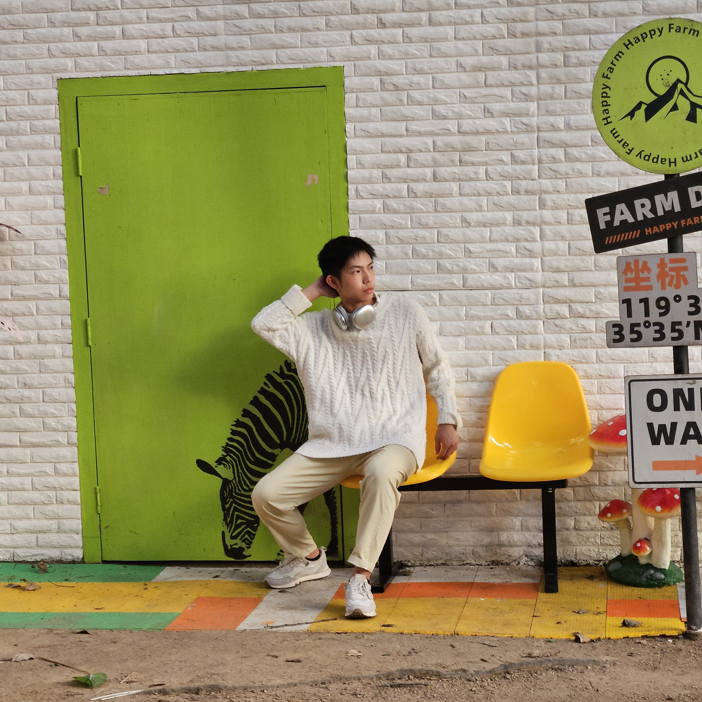

Hi
so who am i?
Introduction
Hi, my name is Kevin Luo and I am in grade 12.
As an October baby, I'm bound to be:
Funny, Charismatic, Kind...
...but also A LATE BLOOMER
I struggled with my grades and classes in elementary and early highschool. Although a late birthday comes with its benefits, having a later development than most my peers made it difficult to catch up. I couldn't wrap around topics in class like others did. They were stronger, faster, and smarter than I was. I started to believe I wasn't good enough.
As time went on, I continued growing, but my poor fundamentals continued to hold me back—that is until I watched an Organic Chemistry Tutor video. Videos like his helped me get back on track with school and my learning. They offered a way for me learn all my class material, from very rudementary things, to difficult post-secondary courses.
When I got the chance in my senior year to design a project of my own, I knew almost instantly that this is what I wanted to do. I made it my goal to help others by making similar videos on courses that others struggled with. One of these classes that I put the focus on is Calculus 12. The mid-term average in the class was ~60% and our final was coming up soon. Before and after the final, I recorded some videos explaining and covering topics in the final. Here are some of the responses of my peers to my project.
Introduction
Hi, my name is Kevin Luo and I am in grade 12.
As an October baby, I'm bound to be:
Funny, Charismatic, Kind... but also A LATE BLOOMER
I struggled with my grades and classes in elementary and early highschool. Although a late birthday comes with its benefits, having a later development than most my peers made it difficult to catch up. I couldn't wrap around topics in class like others did. They were stronger, faster, and smarter than I was. I started to believe I wasn't good enough.
As time went on, I would continue growing, but my poor fundamentals led me to continue down a negative path—that is until I watched an Organic Chemistry Tutor video. Videos like his helped me get back on track with school and my learning. They offered a way for me learn all my class material, from very rudementary things, to difficult post-secondary courses.
When I got the chance in my senior year to design a project of my own, I knew almost instantly that this is what I wanted to do. I made it my goal to help others by making similar videos on courses that others struggled with. One of these classes that I put the focus on is Calculus 12.
So I made my SMART GOAL about helping others.
The mid-term average in the class was ~60% and our final was coming up soon. Before and after the final, I recorded some videos explaining and covering topics in the final. Here are some of the responses of my peers to my project.
Nicole R.
U shouldve done this for the midterm gang
Dimple
this is really helpful bro😔
Seun A.
bro might actually be the organic chemistry tutor
Justin L.
u just saved my a** BOO